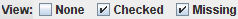

Usage
The basic usage is:
- Download statements from your online bank account.
- Import
 one or more statements.
one or more statements.
- Enter the value of a receipt and filter
the list of entries.
- Mark the entry as checked .
- Repeat from step 3 for the next receipt.
Whilst the mouse and menus can be used for all operations, Statement is
designed for keyboard use, with the basic process being:
- If the cursor is not in the filter box, press ESC.
- Enter the value of a receipt and press ENTER.
- If more than one entry is found, select the desired one with the cursor keys.
- Mark the entry as checked using the SPACE key.
- Repeat from step 2 for each receipt.
Once all your receipts have been checked off, the entries can be saved
 and re-opened later.
Additional statements can be added by importing them.
and re-opened later.
Additional statements can be added by importing them.
The view can be set to show entries in each state, e.g. setting the view to
 will show only the checked
and missing
entries. The view can be reset to show all entries.
Entries can be deleted by selecting them and using delete  .
.